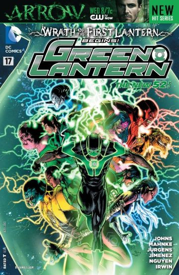

2013
Wrath of the First Lantern
The end of Geoff Johns' Green Lantern saga.
IssuesGreen Lantern (vol. 5) #17–20, Green Lantern Corps (vol. 3) #17–20, Green Lantern: New Guardians #17–20, Red Lanterns #17–18
Published2013
WriterGeoff Johns, Peter Tomasi, Tony Bedard
ArtistDoug Mahnke, Fernando Pasarin, et al.
Continuity note: The finale of Geoff Johns' Green Lantern run (2004–2013). Hal Jordan's death as a Black Lantern is temporary — he returns in the aftermath. Volthoom first appeared in Green Lantern Annual (vol. 5) #1 (2012).
The story
The Guardians' greatest secret is loose. Volthoom — the First Lantern, the being who first harnessed the emotional spectrum — has been freed from his ancient prison, and he feeds on emotion itself, draining the memories and feelings of every Lantern he touches.
Hal Jordan is trapped in the Dead Zone, seemingly dead. Sinestro, his oldest enemy, becomes his unlikely ally. Together they must stop Volthoom from remaking the universe in his image — but Volthoom has already destroyed Korugar, Sinestro's homeworld, and grows stronger with every emotion he consumes.
In the climax, Hal Jordan willingly becomes a Black Lantern to fight Volthoom in the realm of the dead, while Sinestro — wielding both a green and yellow ring — delivers the killing blow. The event ends Geoff Johns' decade-long Green Lantern saga and reshapes the Corps for the future.
Key players
Corps involved
Where to read
- Green Lantern (vol. 5) #17–20 (2013)
- Green Lantern Corps (vol. 3) #17–20 (2013)
- Green Lantern: New Guardians #17–20 (2013)
- Red Lanterns #17–18 (2013)
- Collected in Green Lantern: Wrath of the First Lantern (TPB)
See the full saga in order on the timeline.
Aftermath
Volthoom is destroyed and Hal Jordan returns from death. But the victory comes at a terrible cost — Sinestro executes the Guardians for their crimes, ending their rule over the Corps. Geoff Johns' decade-long Green Lantern saga concludes here, and the Corps enters a new era without its ancient masters.